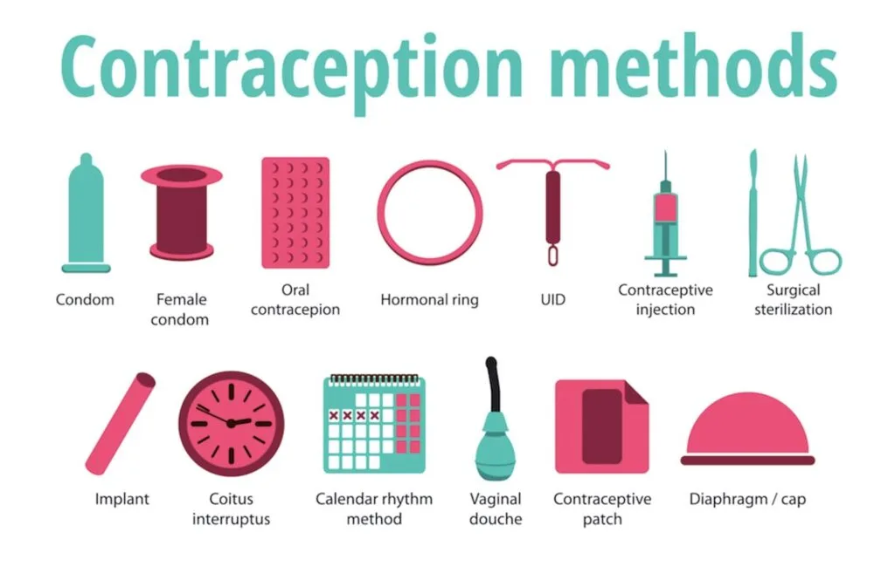

Expanded Nursing Uganda Explanation
Hormonal Methods should be reviewed through safe maternal and newborn assessment, early recognition of danger signs, respectful communication and timely referral. Connect the definition to vital signs, bleeding, fetal or newborn wellbeing, patient education and local protocol requirements.
01 HORMONAL CONTRACEPTIVE METHODS
Hormonal family planning refers to the use of hormonal methods to prevent pregnancy .
These methods involve the use of hormones, usually synthetic versions of those naturally produced by the body, to regulate a woman’s menstrual cycle and prevent ovulation (the release of an egg from the ovaries). By preventing ovulation, hormonal methods make it difficult for sperm to fertilize an egg and thus prevent pregnancy.
These include;
- Oral contraceptive pills
- Implants
- Injectable contraceptive
- Emergency contraceptive pills
Hormonal Methods:
i. Oral Pills:
- Method Description
- Combined Oral Contraceptives Pills containing both oestrogen and progestin hormones
- Progesterone-Only Pills Pills containing only progestin hormone
- Emergency Contraceptive Pills Pills taken after unprotected sex to prevent pregnancy
ii. Implants:
- Method Description
- Implanon (1 Rod Capsule) Subdermal contraceptive rod
- Jadelle (2 Rod Capsules) Subdermal contraceptive rods
- Norplant (6 Rod Capsules) Subdermal contraceptive rods
iii. Injectable Contraceptives:
- Method Description
- Depo Provera Injectable contraceptive administered every three months
- Injector Plan Injectable contraceptive
- Sayana Press Injectable contraceptive
- Noristrate Injectable contraceptive
iii. Emergency Contraceptives:
- Emergency Contraceptive Mechanism of Action
- Lofemenal/Microgynon 4BD for 1 day (Low Dose COC) Inhibits ovulation, thickens cervical mucus
- Eugynon (High Dose COC) 2BD for 1 day Inhibits ovulation, thickens cervical mucus
- Regular POP (Ovrette/Microval) at Recommended Dose Alters cervical mucus, inhibits sperm function
- Levonorgestrel 2 stat Delays ovulation, inhibits fertilization
- Postinar 2 BD for 1 day Alters cervical mucus, inhibits sperm function
- Vikela/Levonelle-2/Norlevo Plan B Delays ovulation, inhibits fertilization
02 Oral Contraceptive Pills
There are two main types of hormonal oral contraceptive formulations:
- Combined hormonal contraceptive methods which contain both oestrogen and progestin thus, they are called combined oral contraceptives (COCs)
- One which contains only progesterone or one of its synthetic analogues ( Progestins ) thus, it is called progestogen-only pills (POPs) method.
03 (i) Combined Oral Contraceptive Pills (COC)
Combined oral contraceptives contain both oestrogen and progesterone. It achieves effects of both hormones. Oestrogen suppresses ovulation and progesterone creates unfavourable conditions for egg transport and thickening of the cervical mucus to impair sperm entrance into the canal.
- Lo-femenal
- Pill Plan (Duofen)
- Microgynon
Mechanism of Action:
Combined methods work by:
- Suppressing ovulation (estrogenic effect)
- Thickening cervical mucus, making it difficult for sperm to penetrate the uterus
- Making the endometrium unsuitable for implantation of a fertilized egg (thin and atrophic due to constant progestogenic action)
- Reducing sperm transport in the upper genital tract (fallopian tubes).
Effectiveness:
- 92 – 99.9% effective, depending on user compliance.
- In very young women, typical effectiveness can be as high as 95.3%.
- Failure rates decline with the duration of use and age of the user.
- Failures may be due to method failure, client error, incomplete information from service providers, drug interactions, severe vomiting/diarrhoea, or expired pills.
Advantages:
- Very effective if taken correctly.
- Effective immediately.
- Easily reversible.
- Few side effects.
- Convenient and easy to use.
- Does not interfere with intercourse.
- Causes regular and predictable periods.
- May improve anemia.
- Reduces dysmenorrhea and premenstrual tension.
- Protects against ovarian and endometrial cancer, and some causes of PID.
- Reduces the risk of ovarian cysts, benign breast disease, and ectopic pregnancy.
- Can be provided by trained non-medical staff.
Disadvantages:
- Effectiveness depends on daily pill intake, requiring strong motivation.
- Increases chances of promiscuity.
- Can cause Candida vulvitis and vaginitis.
- May lead to thromboembolism and benign/malignant liver tumors.
- Requires regular and dependable supply.
- Reduces breast milk, especially in the first 6 months after delivery.
- Not the most appropriate choice for lactating women unless no other method is available and there is a high risk of pregnancy.
Indications:
- Women requiring a highly effective method.
- Women wanting an easily reversible method.
- Non-breastfeeding women or breastfeeding women after 6 months.
- Women who are anaemic with heavy menstrual bleeding.
- Women with a history of ectopic pregnancy.
- Nulliparous women.
- Women with a history of benign, functional ovarian cysts.
- Women with a family history of ovarian cancer.
- Women with menstrual cycle symptoms or irregular menstrual cycles.
Contraindications:
- Absolute contraindications include cardiovascular diseases, liver disease, pregnancy, undiagnosed per vaginal bleeding, and oestrogen-dependent neoplasms.
- Relative contraindications include obesity, varicosities, epilepsy, asthma, mood disorders, nursing mothers in the first 6 months, smoking, and gallbladder disease.
Side Effects:
- Major side effects include hypertension, venous thromboembolism, and cholestatic jaundice.
- Minor side effects can be due to oestrogen, progestin, or both, including nausea, vomiting, headache, leg cramps, weight gain, chloasma & acne, breakthrough bleeding, hypomenorrhea, amenorrhea, leucorrhea, and decreased libido.
Danger Signs of COCs:
- Acute abnormal pain.
- Severe headaches with blurred vision.
- Pain in the chest with difficulty in breathing.
- Pain in the calf muscles.
Indications for Withdraw:
- Severe migraine.
- Visual disturbance.
- Sudden chest pain.
- Severe cramps.
- Excessive weight gain.
- Severe depression.
- Patient wanting pregnancy.
- Awaiting major surgery.
Drug Interaction:
- Decreases effectiveness of methyldopa, oral anticoagulants, and oral hypoglycemics.
- Increases effectiveness of B blockers, corticosteroids, diazepam, aminophylline, and alcohol.
- Other drugs that increase COC metabolism include phenobarbitone, antiepileptics (except sodium valproate and clozapine), rifampicin, griseofulvin, spironolactone, and ketoconazole.
04 WHO Medical Eligibility Criteria for Contraceptive Use.
Category 1: A condition for which there is no restriction for use of the contraceptive
Category 2: A condition where the advantages of using the method generally outweigh the theoretical or proven risks
Category 3: A condition where the theoretical or proven risk outweigh the advantages of using the method.
Category 4: A condition that represents unacceptable health risk if the contraceptive is used.
Who can use only if more appropriate methods are not available (WHO class3)
- Women with high BP (greater than 160/100 but less than 180/110) and no vascular disease.
- Women with symptomatic gall bladder disease.
- Women age 35 yrs or older and light smokers (under 20 cigarettes a day)
- Women taking drugs for epilepsy or anti-TB.
- Women with unexplained vaginal bleeding (only if serious problem suspected)
- Women who are fully b/feeding (6 wks to 6 months postpartum)
- Women who are not b/feeding who are less than 3 weeks postpartum.
- Women with h/o breast cancer and no current evidence of the disease.
Who should not use COCs (WHO Class 4)
- Women with hypertension: blood pressure diastolic above 110 mm Hg. The health risk/benefit ratio is dependent upon the severity of the condition
- Women with current or history of cardiac disease (heart disease or stroke). Among women with underlying vascular disease due to thrombosis, the increased risk of thrombosis with COCs should be avoided;
- Women with thrombo-embolic disease (current and a history of or major surgery with prolonged immobilization). The increased risk of venous thromboembolism associated with COCs should have little impact on healthy women, but may have a big impact on women otherwise at risk for it;
- Women within 2 weeks of child birth (Postnatal) and within 4 weeks or elective surgery;
- Women with known or suspected cervical cancer. Theoretical concern that COC use may affect prognosis of the existing disease. In general, treatment of these conditions renders a woman sterile;
- Women who are pregnant. As no method is indicated, any health risk is considered unacceptable. However, there is no known harm from COCs;
- Women with undiagnosed breast lumps or breast cancer. Breast cancer is a hormonally sensitive tumor. The risk for progress of the condition may be increased among women with current or past history of breast cancer;
- Women who are taking long-term drugs that could affect the pill’s efficacy. Commonly used liver enzyme inducers are likely to reduce the efficacy of COCs. Drugs which affect liver enzymes are the antibiotic rifampicin (note that other antibiotics will not affect pill efficacy), other drugs where another method should be used are: —griseofulvin, and anticonvulsants (such as phenytoin, carbamazepine, barbiturates, and primidone).
- Women with severe headache (recurrent, including migraine with focal neurological symptoms). Focal neurological symptoms may be an indication for an increased risk of stroke( or cerebrovascular accident (CVA) is sudden damage to brain tissue caused either by a lack of blood supply or rupture of a blood vessel . The affected brain cells die and the parts of the body they control or receive sensory messages from ceaseto function.)
- Women who are retarded or forgetful.
- Women with sickle cell disease, as they have increased risk of thrombosis;
- Women with trophoblast disease (current trophoblastic tumor)
- Women who are to undergo major elective surgery with prolonged bed rest.
Client Information
- Start between 1 st and 7 th day of monthly period
- Take pills daily at the same time – at bed time if possible
- Do not miss taking the pill any day
- If you start after the 7 th day of monthly period; you need to use another FP method such condoms or to abstain from sex for one week.
- Contraception is 7 days after initiation
- You will have your monthly period when you are taking the brown pills. Do not stop taking the pills.
If a client misses, they should do the following:
- If you miss one white pill, take it as soon as you remember, then continue normally.
- If you miss 2 white or more days in a row; take two pills each day until all missed pills are taken and you are back on schedule. You must also use a condom for the next 7 days.
- If you miss the brown pill, no worry. Just skip and continue
- If you keep forgetting – may need to change method
05 ii) Progesterone Only Pills (POP)
Progestin-Only Pills are oral contraceptive pills which contain synthetic progestin and are taken orally every day at the same time of day to prevent pregnancy.
Mechanism of Action:
- Reduces the frequency of ovulation.
- Thickens cervical mucus, making it difficult for sperm to penetrate the uterus.
- Partially inhibits ovulation.
Types of POPs available in Uganda:
- Microval : 35 white pills, each containing 0.03 mg Levonorgestrel.
- Ovrette : 28 yellow pills, each containing 0.075 mg Norgestrel.
Effectiveness :
- Depends on user compliance.
- Very effective if used correctly (83%-99%).
- Crucial to take POPs at the same time every day, as effectiveness decreases even with a few hours’ delay.
- In lactating women, POPs are nearly 100% effective, and they do not alter the quantity of milk.
Advantages of POPs:
- Do not suppress lactation.
- No estrogenic side effects.
- Suitable for women with hypertension, thrombotic, cardiac, and sickle cell diseases.
- Can be started at any time of the menstrual cycle and in the early postpartum period.
- Decreased menstrual cramps.
- Decreased amount of bleeding during periods.
- Decreased severity of anaemia.
- Do not increase blood clotting.
- Some protection against pelvic inflammatory disease (progestins make cervical mucus thicker, reducing the likelihood of infection reaching the uterus and tubes).
Disadvantages of POPs:
- Amenorrhea.
- Must be taken at the same time every day.
- Irregular periods, including spotting or bleeding between periods.
- Prolonged or heavy vaginal bleeding.
- For women who have had ectopic pregnancy, POPs do not prevent ectopic pregnancy as well as intrauterine pregnancy.
- For women with a history of ovarian cysts, POPs do not protect against the development of future ovarian cysts.
Indications:
- Women of any reproductive age or parity seeking pregnancy protection.
- Breastfeeding women (6 weeks or more postpartum).
- Post-abortion women (may start immediately).
- Women who smoke.
- Women with high blood pressure, blood clotting problems, or sickle cell disease.
- Women unable to take Combined Oral Contraceptives (COCs) but want to take Pills.
Who should not use POPs (Class 3):
- Women breastfeeding and less than 6 weeks postpartum.
- Women with jaundice.
- Women taking anti-epileptic and anti-TB medication.
- Women with unexplained vaginal bleeding.
- Women with breast cancer.
- Women concerned about changes in their menstrual bleeding pattern.
- Women unable to remember taking a pill every day (no more than 3 hours late).
Who should not use POPs (Class 4):
- Women known or suspected to be pregnant.
- Women who are known or suspected to be pregnant. POPs should not be initiated if a woman is pregnant. However, there is no known harm to mother or fetus if POPs are used during pregnancy;
- Signs of problems from POPs warranting immediate return to clinic
- Severe lower abdominal pain.
- Heavy bleeding (twice as long and as much).
- Migraine headaches, repeated very painful headaches, or blurred vision.
Signs of problems from POPs warranting immediate return to clinic:
- Severe lower abdominal pain.
- Heavy bleeding (twice as long and as much).
- Migraine headaches, repeated very painful headaches, or blurred vision.
Client Instructions:
- Start between the 1st and 7th day of the monthly period.
- If started after the 1st day of bleeding, abstain from intercourse or use another method for the next 48 hours.
- Take pills daily at the same time.
- Do not miss taking the pill any day.
- Return to the clinic for more pills before finishing the last pack.
- Severe diarrhoea or vomiting reduces pill effectiveness. Use a backup method or abstain from sex while taking the pills and for 48 hours after.
- If client misses taking pills:
- If more than 3 hours late, take it as soon as remembered and the next pill at the usual time. Use a backup method or abstain for the next 48 hours.
- If miss two or more days, take one as soon as remembered, continue as usual, and use a backup method or abstain for the next 48 hours.
- If consistently forgetting, consider another method and seek counseling.
Contraindications:
- Pregnancy : Progestin-Only Pills (POPs) should not be initiated if a woman is pregnant.
- Unexplained vaginal bleeding : POPs are contraindicated in cases of unexplained vaginal bleeding, and immediate medical attention is advised to determine the cause.
- Recent history of breast cancer : Women with a recent history of breast cancer are advised against using POPs due to potential hormonal interactions that could affect cancer progression.
- Arterial diseases : Individuals with arterial diseases, such as a history of stroke or cardiovascular issues, should avoid POPs as they may pose additional risks to vascular health.
- Thromboembolic diseases : Those with a history of thromboembolic diseases, involving blood clotting, are at an increased risk when using POPs, making it a contraindicated option.
- Active hepatic diseases : Presence of active liver diseases is a contraindication, as POPs can impact liver function, and their use might exacerbate hepatic conditions.
- Hypertension : Women with hypertension are advised against using POPs, as the hormonal components may contribute to increased blood pressure.
Side Effects:
- Amenorrhea : Some women may experience amenorrhea (absence of menstruation) as a side effect of POPs, which is generally considered a normal response to hormonal changes.
- Spotting : Spotting, or irregular bleeding between periods, can occur, and individuals should be aware that this is a common side effect that usually diminishes with time.
- Prolonged or heavy bleeding : While some may experience prolonged or heavy bleeding, this side effect should be discussed with a healthcare provider to ensure it is not indicative of an underlying issue.
- Lower abdominal pain : Lower abdominal pain may occur.
- Weight gain or loss : Changes in weight, either gain or loss, may be observed.
- Jaundice : Jaundice, characterized by yellowing of the skin or eyes, is a rare but serious side effect.
- Nausea and vomiting : Nausea and vomiting may occur initially but often subside.
- Headache with blurred vision : Headaches with blurred vision may be experienced.
- Excessive hair growth : Some individuals may notice changes in hair growth patterns.
- Breast fullness or tenderness : Breast fullness or tenderness is a common side effect that usually resolves over time.
- High blood pressure : An increase in blood pressure may occur in some individuals
06 Implants
Implants are small , flexible rods or capsules that are inserted under the skin of a woman’s upper arm .
These implants release a steady, low dose of hormones (usually a progestin hormone) into the bloodstream over an extended period. The most common types of contraceptive implants include Implanon, Jadelle, and Norplant.
Implants are considered a reversible form of contraception, and their effectiveness is not dependent on user compliance once inserted. They are suitable for women who want a reliable, long-term birth control option without the need for daily or frequent intervention.
Types :
- Implanon : A single rod capsule effective for 3 years.
- Jadelle : Two rods of levornogestrel each 75mg capsules providing protection for 5 years.
- Norplant : Consists of 6 rods each with 36mg levornogestrel capsules labelled for 5-7 years.
Modes of Action:
The hormonal release from these implants serves to prevent pregnancy by thickening the cervical mucus within 24 hours, hindering sperm entry into the uterus, inhibiting ovulation (the release of eggs from the ovaries), and altering the uterine lining to make it less receptive to a fertilized egg. Implants are highly effective and offer long-term contraception, ranging from three to seven years, depending on the specific type.
Insertion : Inner aspect of non dominant arm, 6 – 8 cm above elbow fold under local anesthesia. This is at day1, immediate after abortion or 3weeks postpartum.
Removal : Approximately 3 to 5 years
Advantages:
- Very effective within 24 hours after insertion.
- Easily reversible with no delay in returning to fertility after removal.
- Reduces frequency and intensity of sickle cell crises.
- Highly effective for long-term contraception.
- Shares benefits with Depo Provera.
Common Side Effects and Disadvantages:
- Changes in menstruation patterns.
- Spotting.
- Rare instances of heavy bleeding.
- Amenorrhea.
- Does not protect against STIs, including HIV/AIDS.
- Discomfort in the hand after insertion.
- Possible weight changes (overweight or weight loss).
- Minor surgical procedure required for both insertion and removal.
Indications:
- Breastfeeding post-partum mothers.
- Adolescents.
- Post-abortion contraception.
- Women with sickle cell disease.
- Women awaiting surgical contraception.
- Women on treatment, e.g., ARVs.
Contraindications:
- Serious problems with the heart or blood vessels.
- Breast cancer history.
- Liver diseases leading to jaundice.
- Pregnancy.
Signs and Problems Requiring Medical Attention:
- Soreness at the site of insertion.
- Capsules coming out.
- Severe headaches.
- Heavy bleeding, exceeding the usual amount and duration.
- Pregnancy.
- Missed period after several regular cycles.
07 Injectable Contraceptives
Examples
- Depo Provera ( Depo Medroxyprogesterone acetate (DMPA) , single dose of 150 mg I.M every 12 weeks. (Injecta Plan)
- Sayana Press 104mg, 0.65ml Subcutaneously
- Noristerat (Norethisterone) 200mg every 8 weeks for 24 weeks, then every 12 weeks.
- Norigynon / Mesigyna (50 mg norethindrone enanthate plus 5 mg estradiol valerate) ; Both given monthly.
These contraceptives contain a single type of hormone, progestin .
Depo Provera is a hormone used for contraception. It is given by injection and its effects will last for three months at a time.
Mode of Action
- Inhibits ovulation.
- Thickens cervical mucus, hindering sperm entry.
- Thins the uterine lining, reducing chances of fertilized egg implantation.
Indications
- Breastfeeding mothers after 6 weeks or immediately if not breastfeeding.
- Women needing long-term contraception.
- Known/suspected HIV-positive women.
- Women with sickle cell disease.
- Women unable to use COC due to oestrogen content.
- Women awaiting surgical contraception.
Advantages
- Very effective.
- Does not suppress lactation.
- Easy to remember return dates.
- Private usage.
- No oestrogen-related side effects.
- Reduces sickle cell crisis frequency.
- Non-interference with sex.
Disadvantages
- Changes in menstrual bleeding.
- Spotting (common in the first 3 months).
- Amenorrhea (common after 1st injection and after 9-12 months).
- Prolonged heavy vaginal bleeding.
- Weight changes.
- Irreversible injection.
- Delayed return of fertility.
- Loss of libido.
- Does not protect against STIs/HIV/AIDS.
Management
- Depo Provera 150mg deep IM into deltoid or buttock muscle.
- No rubbing to avoid increased absorption.
- Advise abstinence or backup FP method for the first 7 days after injection.
- Return for the next dose 12 weeks after the injection.
Sayana Press
Sayana Press is a contraceptive injection that women can give to themselves to prevent pregnancy. It’s given under the skin, at the front upper thighs or abdomen. The injection releases medication that runs through your bloodstream over a period of 13 weeks.
- Sayana press ® is a single-dose container with 104 mg Medroxyprogesterone acetate (MPA) in 0.65ml suspension (104mg) formulated for subcutaneous.
- It is administered subcutaneously into the anterior thigh or abdomen or arm.
- The efficacy of Sayana press depends on adherence to the recommended dosage schedule of administration.
****
Composition
- Single-dose container with 104 mg Medroxyprogesterone acetate (MPA) in 0.65ml suspension.
Administration
- Subcutaneously into the anterior thigh, abdomen, or arm
Mechanism of Action
- Suppresses ovulation.
- Renders endometrium unsuitable for implantation.
- Increases cervical mucus viscosity, impeding sperm penetration.
Indications
Nearly all women can use it safely & effectively including women:-
- Women whose partners have undergone vasectomy until vasectomy is effective.
- Have or have not had children.
- Any age including adolescents & women over 40 years old.
- Have just had an abortion/miscarriage.
- Breastfeeding women 6 weeks postpartum.
- HIV infected whether or not on ART.
Advantages and Non contraceptive benefits.
- New formulation for S/C injection.
- 30% low side effects compared to Depo-Provera.
- Do not interfere with sex.
- Private & no one else can tell that a woman is using it.
- May help women gain weight.
- Do not require daily action.
- Prevents pregnancy.
- Protects against endometrial cancer, uterine fibroids.
- Reduces sickle cell crisis among women with sickle cell anaemia.
- Protects against symptomatic PID & iron deficiency anaemia.
Disadvantages
- Weight changes.
- No protection against STIs/HIV/AIDS.
- Delayed fertility return.
- Potential side effects like hypersensitivity reactions, decreased/increased appetite, loss of libido, dizziness, headache, and more.
Problems that may need medical attention
- Loss of bone mineral density.
- Menstrual irregularities.
- Thromboembolic disorders.
- Anaphylaxis & anaphylactoid reactions.
- Sudden partial or complete loss of vision.
- Weight gain or loss
- Does not protect against STI/HIV/AIDs
- Delayed fertility return
- Hypersensitivity reactions
- Decreased/increased appetite
- Loss of libido & irritability
- Dizziness, headache & migraine
- Thromboembolic disorders
- Nausea & vomiting
- Jaundice
- Alopecia & urticaria
- Loss of bone mineral density
- Back & leg pains
- Mood changes
- Abdominal bloating & discomfort
08 Emergency Contraception / Post-Coital Contraception
- Emergency Contraceptive Pills (ECP)
- Progesterone-Only Pills Regimen
- Prevents implantation
- Failure rate is about 1%
- Effectiveness is over 99% in preventing pregnancy
- Post-coital contraception is solely for emergency use and is not effective if used regularly, except for copper IUCDs.
- Women seeking emergency contraception should also be counselled about regular contraceptive options, promoting consistent and correct usage.
- Referral to relevant services, such as HIV counselling, testing, post-exposure prophylaxis (PEP), and treatment for sexually transmitted infections (STIs), is essential.
- Specialized services for sexual and gender-based violence should also be considered.
- Greet and introduce yourself.
- Maintain a respectful attitude.
- Ensure confidentiality of the discussion.
- Explain different ECP options, including usage, side effects, and the need for referral or follow-up.
- Encourage questions from the client.
- Discuss regular contraception options.
- Conduct counselling with active client involvement, reassurance of confidentiality, and in a private and supportive environment.
- Ethinyl estradiol 2.5mg b.d X 5/7
- Conjugated oestrogen 15mg b.d X 5/7
- Levonorgestrel 0.75mg stat and after 12 hours.
- Mifepristone 600 mg stat – single dose.
- Copper IUDs inserted within 5 days.
- Others: Postinor, Microgynon, Eugynon.
- Unprotected sexual intercourse
- Rape survivors
- Contraceptive method failure
- Missed contraceptive pills or injections
- Delay in taking pills
- Sexual assault or first-time intercourse
- Pregnancy
- After 120 hours or 5 days of unprotected sex
- Emergency Contraceptive Dosage Mechanism of Action
- Lofemenal/Microgynon 4BD for 1 day (Low Dose COC) 4 tablets once Inhibits ovulation, thickens cervical mucus
- Eugynon (High Dose COC) 2BD for 1 day 2 tablets twice Inhibits ovulation, thickens cervical mucus
- Regular POP (Ovrette/Microval) at Recommended Dose As recommended Alters cervical mucus, inhibits sperm function
- Levonorgestrel 2 stat 2 tablets at once Delays ovulation, inhibits fertilization
- Postinar 2 BD for 1 day 2 tablets twice Alters cervical mucus, inhibits sperm function
- Vikela/Levonelle-2/Norlevo Plan B As recommended Delays ovulation, inhibits fertilization
NON HORMONAL METHODS click here
09 Nursing Uganda Clinical Lens
Use Hormonal Methods as a practical nursing topic, not only a memorized definition. Move from individual illness to prevention, population risk, health education and continuity of care.
- What to understand first: define hormonal methods, identify the normal or expected pattern, then explain what changes when the patient is unwell.
- Why it matters in care: the nurse must recognize risk early, explain findings clearly, document accurately and know when to escalate.
- How to revise it: connect each point to assessment, nursing diagnosis or care problem, intervention, rationale and evaluation.
10 Assessment Guide
- Who is affected, where they live, risk factors, resources and barriers to care.
- Environmental hygiene, nutrition, immunization, water, sanitation and health-seeking behaviour.
- Community beliefs, leaders, household practices and surveillance data.
11 Nursing Priorities, Rationales and Outcomes
- Promote prevention, early detection, referral and community participation.
- Use clear health education matched to literacy, culture and available resources.
- Document findings and coordinate with community health structures.
The rationale for these priorities is patient safety: nursing actions should prevent deterioration, reduce discomfort, support recovery and create clear evidence for the next caregiver.
- Expected outcome: The community understands the message, risk is reduced and follow-up or referral pathways are active.
12 Patient Teaching and Revision Check
- Explain hormonal methods in simple language the patient or caregiver can repeat back.
- Teach warning signs, medicine or follow-up instructions, hygiene or lifestyle points where relevant.
- For exams, prepare a short answer using: definition, causes or risk factors, signs, assessment, management, complications and prevention.
- For ward practice, document baseline findings, actions taken, patient response and the plan for review.
Illustrations and Diagrams (2)


Related Video Lectures
Watch nursing lecture videos on YouTube for this topic. Opens in a new tab.
Watch on YouTubeExternal link: YouTube may use its own cookies and terms. Nursing Uganda is not affiliated with YouTube.